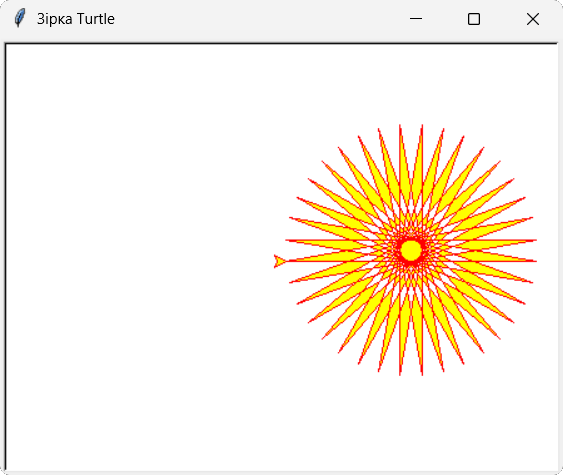
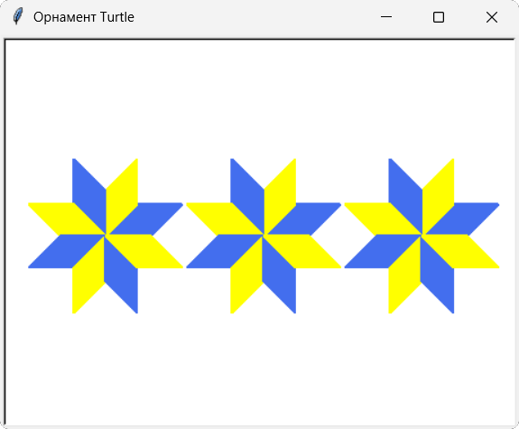

В цьому розділі ти дізнаєшся, як створювати орнаменти та візерунки у Turtle.
Візерунок - це повторювана геометрична форма, яка може бути створена за допомогою turtle.
Орнамент - це специфічний вид візерунка, побудований на ритмічному повторенні та чергуванні його елементів.
Приклади орнаментів можна побачити:
1. Намалюємо візерунок "Зірка Turtle" жовтого кольору з червоним контуром.
import turtle
screen = turtle.Screen()
screen.title("Зірка Turtle")
screen.setup(width=450, height=350)
soloha=turtle.Turtle()
soloha.color('red', 'yellow')
soloha.begin_fill()
for i in range(36):
soloha.forward(200)
soloha.left(170)
soloha.end_fill()
turtle.done()

2. Намалюємо орнамент з ромбів у жовто блакитних кольорах.
import turtle
screen = turtle.Screen()
screen.title("Орнамент Turtle")
screen.bgcolor("white")
screen.setup(width=460, height=350)
ben = turtle.Turtle() # Створення виконавця на ім'я Ben
ben.speed(0) # Максимальна швидкість малювання
ben.pensize(2) # Встановлення розміру олівця
def draw_diamond(side, color_name): '''Малювання одного кольорового ромба'''
ben.color(color_name)
ben.fillcolor(color_name)
ben.begin_fill()
for _ in range(2):
ben.forward(side)
ben.left(45)
ben.forward(side)
ben.left(135)
ben.end_fill()
def draw_star_element(x, y): """Малювання одного повного елемента орнаменту"""
for i in range(8): # Малюємо 8 пелюсток-ромбів по колу (традиційна українська зірка)
ben.penup()
ben.goto(x, y)
ben.setheading(i * 45)
ben.pendown()
# Чергуємо кольори пелюсток для вишиваного ефекту
current_color = "royalblue2" if i % 2 == 0 else "yellow"
draw_diamond(40, current_color)
start_x = -140
start_y = 0
spacing = 140 # Відстань між центрами елементів
for count in range(3): ''' Малювання рівно трьох елементів вишивки в один ряд '''
draw_star_element(start_x + (count * spacing), start_y)
turtle.done()

Створення орнаментів та візерунків у Turtle.
1. Намалюйте коло радіусом 150 пікселів та зафарбуйте його кориневим кольором.
2. Намалюйте напівколо зеленого кольору.
3. Створіть три різнокольорові точки різного розміру.
4. Намалюйте три ліхтарі світлофора за допомогою метода dot().
5. Намалюйте зелений дев'ятикутник за допомогою методу circle().
6. Створіть мішень для стрільби із лука.
Початковий рівень
1. Створіть 5 простих різнокольорових геометричних фігур.
2. Фігури мають не торкатися і не перетинати одна одну.
Середній рівень
1. Створіть будинок хоббіта з круглими вікнами та дверима.
2. Створіть біля будинку ялинку.
Достатній рівень
1. Створіть квітку.
2. Створіть веселку.
Високий рівень
1. Створіть мультиплікаційного персонажа "Капітошка".
2. Створіть велосипедне колесо.